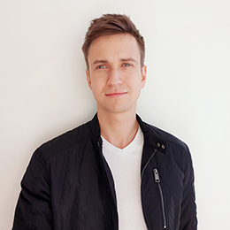

Application support engineer with experience working in international environment with mission critical systems that require 24/7 availabiliy.
Previous experiences includes working in the field of Web design/development and graphic design on-site and as a freelancer. Additional skills includes on-hands expierience with online marketing campaigns in social networks and SEO optimization for websites.
Responsible and accurate person by nature and also a curious learner who always want to improve his skills and develop himself.
Find me on LinkedIn

Experience
- Worldline Latvia
(03.2020 - Present) Application Support Engineer
(12.2017 - 03.2020) Ecommerce solutions Technical Support Specialist - Piche
(06.2012 - 02.2017) Graphic Designer - Sporta Medicīnas Valsts aģentūra
(09.2009 - 02.2010) Technical Support Specialist
Education
- Web-tehnoloģiju skola
(2011 - 2012) Multimedia design, Professional 3rd level degree - Latvijas Universitāte
(2007 - 2011) E-commerce and Logistics, Bachelor degree
Skills
- HTML/CSS
- jQuery
- Adobe Photoshop
- Adobe Illustrator
- Adobe InDesign
- Postman
- SoapUI
- Jira
- Oracle SQL
- MySQL
- Linux
- Jira
Interests
- Technologies
- Running
- Ice Hockey
- Cooking
- Gaming